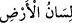

– “Bu mera nerededir?”
– “Ancak Benim bildiğim bir yerde.”
Bazıları da der ki: Arzdan Allah’ın bu emrine ilk olarak icâbet eden Kâbe’nin
bulunduğu yer iken, gökten ilk icâbet eden Kâbe’nin karşısına gelen yerdir. Böyle
olduğu için de Allah Teâlâ ona diğer yerlerden daha saygın bir konum ihsan eylemiştir.
Hatta İslâm’ın Kâbesi ve mahlûkâtın kıblesi olmuştur.
Bir görüşe göre ise arzdan ilk icâbet eden Şam bölgesindeki yerleşim yerlerinden
Ürdün’dür ki buraya () yani “Arzın dili” denmesinin sebebi budur.
İbn Abbas der ki: Peygamber (s.a.)’in toprağının aslı Mekke toprağının içindeki bir
yerdendir ki bu, Arz’dan, Mustafa’nın zerresinden ve Müctebâ’nın toprağının esasından
başkasının cevap vermediğini gösterir. Arz’ın; Ümmü’l-kurâ yani şehirlerin anası olan
Kâbe’nin altından itibaren döşenmeye başlanmasının sebebi budur. Dolayısıyla Hz.
Peygamber de ruhen ve ceseden varlık sahnesine çıkış açısından herşeyin aslı olurken,
kâinât baştan aşağı onun peşinden gelmiş olmaktadır. Hz. Peygamber’e bunun için
“ümmî peygamber” denmiştir; çünkü o herşeyin ‘ümm’ü yani anası ve temelidir.
Şâyet sahih bir haberde vârid olduğuna göre “Herkesin toprağı defnedildiği yer” ise,
bu Hz. Peygamber’in defnedildiği yerin de Mekke olmasını gerektirir, çünkü toprağı
oradadır, denilecek olursa, şöyle derim: O su çalkalanınca bu değerli unsuru, bu latif
köpüğü, bu eşsiz cevheri fırlatmış; böylece Peygamber’in cevheri Medine-i
Münevvere’deki, türbesinin bulunduğu yerin hizâsına düşmüştür. Mekke Tarihi’nde
geçtiğine göre onun değerli unsuru, tûfan kopuncaya dek Mekke’deki yerinde etrafı
aydınlatıyordu; ancak tûfandaki dalgalar bu unsuru kabr-i şerifinin bulunduğu yere
fırlattı ki bu da sebebini Allah erlerinin bileceği ilâhi bir hikmet ve rabbânî bir gayretin
sonucu idi. İşte bu sebeple o değerli merkadin, o muazzam şehidliğin Arş’taki ve
cennetlerdeki bütün oluşlardan bile daha üstün olduğu husûsunda âlimler arasında bir
anlaşmazlık bulunmamaktadır. Meselâ İmam Mâlik bu yönde görüş belirtmiş ve buna
şahid olarak şöyle demiştir: Ben Ebûbekir ve Ömer için Allah Rasûlünün toprağından
yaratılmalarından daha büyük bir üstünlük tanımıyorum. Çünkü bunların kabirleri bütün
oluşlardan üstün durumdaki Ravza-i Mutahhara’nın bulunduğu yerdedir. Hz. Peygamber
hem Mekkeli hem de Medinelidir; Mekke için yanıp tutuşması bu münâsebetle olup
türbesinin Medine’de bulunması da bu hikmete dayalıdır.
İmam Sühreverdî (rh.) der ki: Azrâîl (a.s.) Arz’ı eliyle avuçladığında İblis de iki
ayağı ile Arz’a basmakta imiş; bu sebeple Arz’ın bir bölümü iki ayağı arasında kalırken
bir kısmı bizzat ayaklarının bastığı yer olmuş. İşte durmadan kötülük emreden nefisler
İblis’in ayağının değdiği yerlerden yaratılmıştır -ki nefs-i emmârelerin şerlerin kaynağı
olmasının sebebi budur- Arz’ın bazı bölgelerine ise İblis’in ayağı ulaşamamış; işte
peygamberlerin ve velîlerin topraklarının aslı buralardaki topraktan yaratılmıştır.
Hz. Peygamber’in toprağı ise Allah’ın, Azrâîl’in avucundan bizzat nazar kıldığı yer
imiş; oraya İblis’in ayağı değmediği gibi nefs-i emmâre cehâleti de asla bulaşmamış;
aksine cehâletin tamamıyla sökülüp atıldığı ve ilimden büyük pay alan bir yer olmuş.